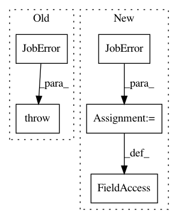

a3b103f606a54940520ad7f6dd7a41f465e2a591,reframe/core/schedulers/slurm.py,SlurmJobScheduler,_cancel_if_pending_too_long,#SlurmJobScheduler#Any#,446
Before Change
t_pending = time.time() - job.submit_time
if t_pending >= job.max_pending_time:
self.cancel(job)
raise JobError("maximum pending time exceeded", job.jobid)
def _cancel_if_blocked(self, job, reasons=None):
if (job.is_cancelling or not slurm_state_pending(job.state)):
return
After Change
t_pending = time.time() - job.submit_time
if t_pending >= job.max_pending_time:
self.cancel(job)
job._exception = JobError("maximum pending time exceeded")
def _cancel_if_blocked(self, job, reasons=None):
if (job.is_cancelling or not slurm_state_pending(job.state)):
return
In pattern: SUPERPATTERN
Frequency: 3
Non-data size: 5
Instances
Project Name: eth-cscs/reframe
Commit Name: a3b103f606a54940520ad7f6dd7a41f465e2a591
Time: 2020-10-04
Author: karakasis@cscs.ch
File Name: reframe/core/schedulers/slurm.py
Class Name: SlurmJobScheduler
Method Name: _cancel_if_pending_too_long
Project Name: eth-cscs/reframe
Commit Name: a3b103f606a54940520ad7f6dd7a41f465e2a591
Time: 2020-10-04
Author: karakasis@cscs.ch
File Name: reframe/core/schedulers/torque.py
Class Name: TorqueJobScheduler
Method Name: poll
Project Name: eth-cscs/reframe
Commit Name: 1a08f1da70bd6d4c33585f67af542dec4d850161
Time: 2020-07-20
Author: eirini.koutsaniti@cscs.ch
File Name: reframe/core/schedulers/torque.py
Class Name: TorqueJobScheduler
Method Name: poll_jobs